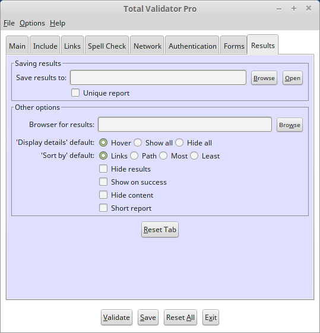

Introduction
All of the options that appear on the Results tab of the Pro tool are described below.

 top
topSave results to
Normally results are saved to your documents folder. This can sometimes cause issues, or is just inconvenient.
Use this option to select an alternative folder to save the results to. You can use the Browse button to select a folder or enter one directly. But note that if the folder doesn't already exist then it will be ignored.
If you do enter a folder and but later wish to go back to saving to the default location then just delete whatever is entered (i.e. leave it blank).
The Open button will open the currently selected folder, so you can quickly get to the results.
Unique report
When results are saved they are normally saved with the first page called
TotalValidator.html and the rest of the pages in a sub folder called
Results. So each time you run a new validation the old results are
overwritten.
If you select this option the first page will be called TV<timestamp>.html
and the sub folder TV<timestamp>, where <timestamp> is in the format
YYYYMMDDHHMMSS. Although not guaranteed this should make the results unique
so that they are not overwritten each time.
It is expected that this option will be used with the 'Save Results To' option for people wishing to keep old results.
Browser for results
On Windows and Linux systems if you wish to use a specific browser enter the path to the executable, or use the browse button to select it. On OS X just enter the name of the browser: "Safari", "Firefox", "Google Chrome".
If you leave this blank, or the browser cannot be found, then the results will be displayed using your default browser (default_browser.sh will be executed for Linux).
Hide Results
Normally when the validation is completed your default or selected browser will automatically open to display the validation results. If you do not wish to display the results then check this option. You may then use the 'Last Results' button on the Main tab to display the results at your leisure.
Display details
On the results pages further details are displayed when you hover over the text of a problem. Instead of hovering to display this information, you can choose to always display it or always hide it for that particular page using the 'Display issue details' option at the top of the page. Alternatively you can set the default value of this option here if you have a specific preference you wish to use every time.
Sort by
On the summary results page you can sort the list of pages with issues is various ways using the 'Sort by' option at the top of the page. Alternatively you can set the default value of this option here if you have a specific preference you wish to use every time.
Show on success
Normally pages with no problems are not displayed in detail. Use this option to display the layout of good pages. This can be useful if you have a redirected site and are unsure as to what has been validated.
When checking more than one page it also provides a link to each page on the main report.
Short report
By default the report displays all the lines in the web page formatted so that you can quickly find where problems are and correct them. Use this option to automatically select the 'Short report' checkbox to display only the lines with problems on.
Hide content
By default the report displays the content as well as tags on the page. Use this option to automatically select the 'Hide content' checkbox to hide the content of the web page. This may make it easier to locate and resolve problems.
Note that any content with spelling mistakes will be always displayed.